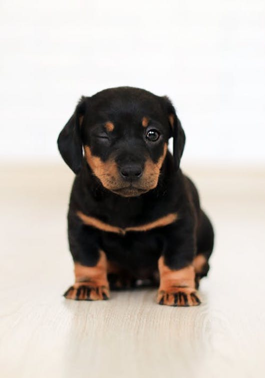
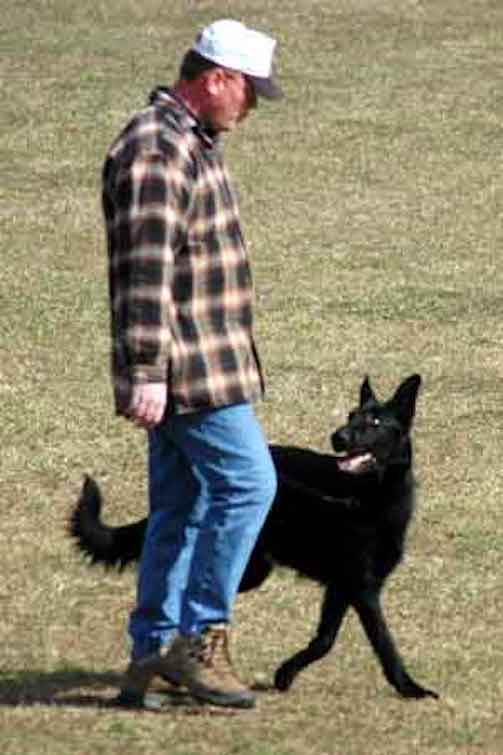
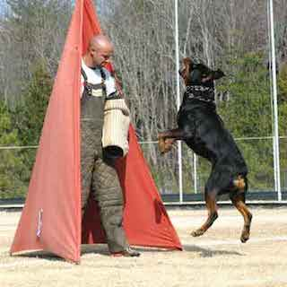
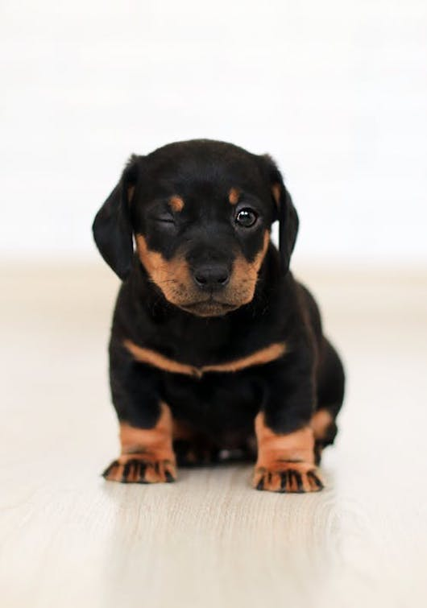
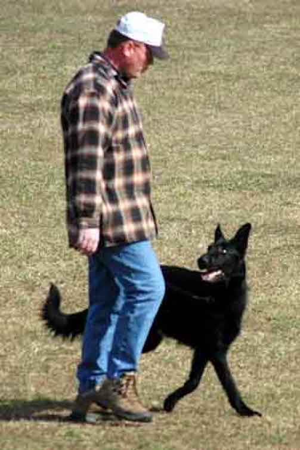
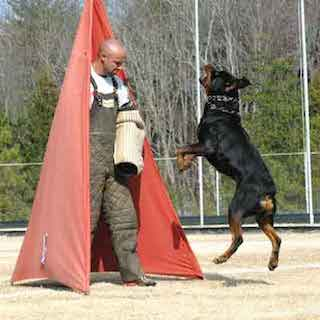
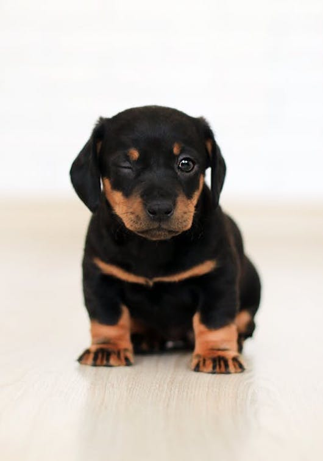
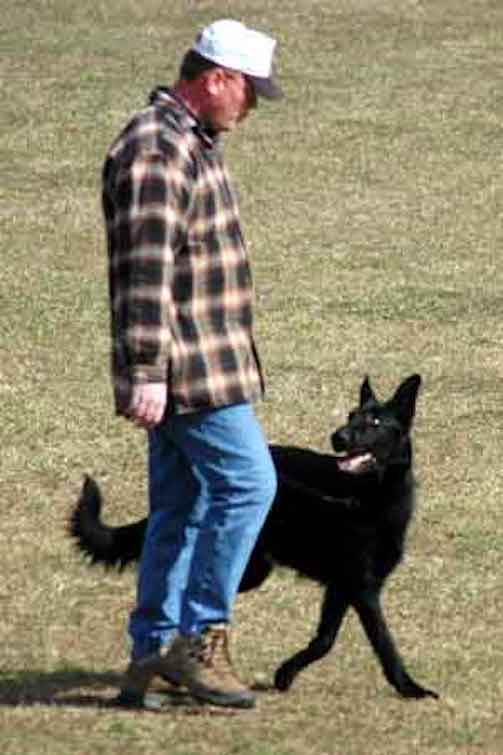
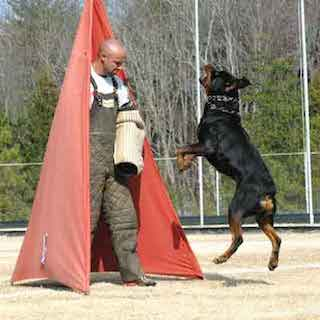

These pictures show some of the actions that take place in a trial. There is also a new pup that is about to embark on his training adventure.
I wanted this site to show my interest in dogs. I have been training and competing with dogs for almost 25 years. I have trained in a discipline known as Schutzhund. This is a German dogsport that tests the dogs ability to track a train, do obedience exercised, and prove the ability to protect its handler. I have trained all over the country with instructors from all over the world.
I takes many years of training to acheive the titles that are given to the team. The training is very fulfilling when you start with an 8 week old puppy and take them to national or internation trials.



These pictures show some of the actions that take place in a trial. There is also a new pup that is about to embark on his training adventure.